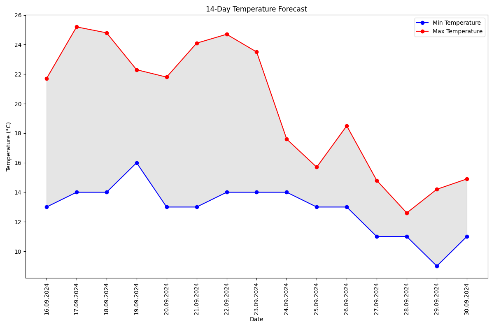

14-Day Weather Forecast for Berlin
Datum: 16.09.2024
Min-Temp: 13.0°C, Max-Temp: 19.5°C
Regenwahrscheinlichkeit: 3.603%, Windgeschwindigkeit: 27.7 km/h
Datum: 17.09.2024
Min-Temp: 14.4°C, Max-Temp: 25.1°C
Regenwahrscheinlichkeit: 0.0%, Windgeschwindigkeit: 13.3 km/h
Datum: 18.09.2024
Min-Temp: 14.4°C, Max-Temp: 24.8°C
Regenwahrscheinlichkeit: 0.0%, Windgeschwindigkeit: 13.0 km/h
Datum: 19.09.2024
Min-Temp: 15.4°C, Max-Temp: 21.3°C
Regenwahrscheinlichkeit: 0.1%, Windgeschwindigkeit: 13.7 km/h
Datum: 20.09.2024
Min-Temp: 14.6°C, Max-Temp: 21.9°C
Regenwahrscheinlichkeit: 0.0%, Windgeschwindigkeit: 15.1 km/h
Datum: 21.09.2024
Min-Temp: 12.5°C, Max-Temp: 24.1°C
Regenwahrscheinlichkeit: 0.0%, Windgeschwindigkeit: 17.6 km/h
Datum: 22.09.2024
Min-Temp: 14.6°C, Max-Temp: 24.7°C
Regenwahrscheinlichkeit: 0.0%, Windgeschwindigkeit: 16.2 km/h
Datum: 23.09.2024
Min-Temp: 14.8°C, Max-Temp: 23.5°C
Regenwahrscheinlichkeit: 0.0%, Windgeschwindigkeit: 11.5 km/h
Datum: 24.09.2024
Min-Temp: 14.6°C, Max-Temp: 17.6°C
Regenwahrscheinlichkeit: 2.5%, Windgeschwindigkeit: 15.8 km/h
Datum: 25.09.2024
Min-Temp: 13.3°C, Max-Temp: 15.7°C
Regenwahrscheinlichkeit: 5.6%, Windgeschwindigkeit: 27.4 km/h
Datum: 26.09.2024
Min-Temp: 13.8°C, Max-Temp: 18.5°C
Regenwahrscheinlichkeit: 1.0%, Windgeschwindigkeit: 32.0 km/h
Datum: 27.09.2024
Min-Temp: 11.6°C, Max-Temp: 14.8°C
Regenwahrscheinlichkeit: 2.4%, Windgeschwindigkeit: 26.9 km/h
Datum: 28.09.2024
Min-Temp: 11.1°C, Max-Temp: 12.6°C
Regenwahrscheinlichkeit: 6.0%, Windgeschwindigkeit: 20.8 km/h
Datum: 29.09.2024
Min-Temp: 9.7°C, Max-Temp: 14.2°C
Regenwahrscheinlichkeit: 3.6%, Windgeschwindigkeit: 21.6 km/h
Datum: 30.09.2024
Min-Temp: 11.4°C, Max-Temp: 14.9°C
Regenwahrscheinlichkeit: 6.7%, Windgeschwindigkeit: 35.6 km/h
Temperature Chart
